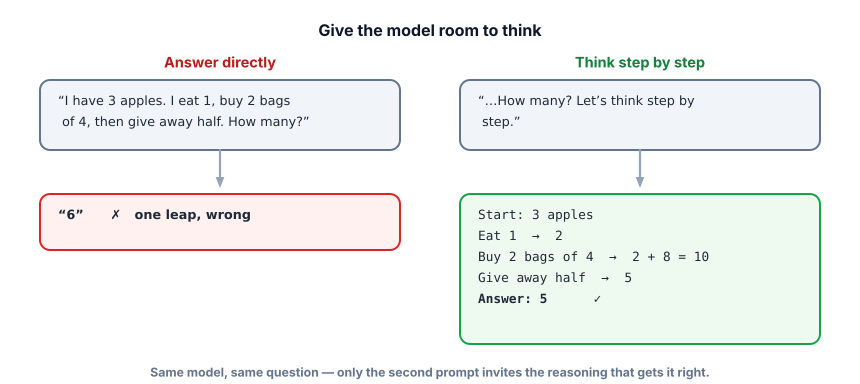
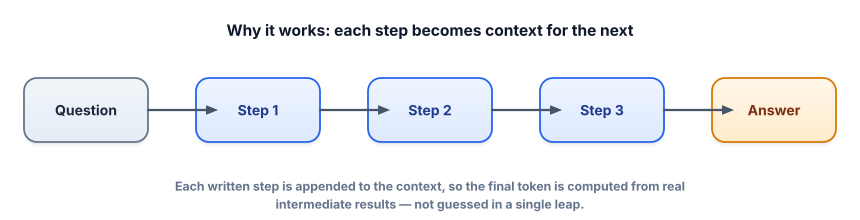

Chain-of-thought & reasoning
For anything multi-step — math, logic, planning, careful analysis — one tweak reliably boosts accuracy: ask the model to reason before it answers. It’s simple, it’s backed by how the engine works, and it’s a staple of real prompts.
Why blurting fails
Recall from Track 1 that the model generates one token at a time, each conditioned on everything so far. If you demand the final answer immediately, the model must commit to an answer token having done no intermediate work — there’s nowhere for the “calculation” to happen. For a one-step lookup that’s fine. For a multi-step problem, it’s like being forced to shout the answer to a word problem before working it out: you’ll often be wrong. Letting the model write the steps first gives those intermediate results a place to live — the context — which the final answer can then build on.
Chain-of-thought (CoT) prompting asks the model to produce its intermediate reasoning steps before the final answer. The simplest form is zero-shot CoT: just add “Let’s think step by step.” The stronger form is few-shot CoT: show a couple of examples that include worked reasoning, so the model imitates that reasoning style on the new problem.

The reason this works follows directly from autoregression: each reasoning step you let the model write becomes part of the context for the next token, so the final answer is computed from real intermediate results instead of produced in a single risky leap.

Feel it on a trick question
Here’s a problem engineered to trip up fast thinking (humans fail it too). Try “answer fast,” then “reason it out.”
Reason vs. blurt
A bat and a ball cost $1.10 together. The bat costs $1.00 more than the ball. How much is the ball?
In production you often want the reasoning to happen but only use the final answer. The pattern: ask it to reason, then put the answer on a predictable last line you can parse. (Uses the ask() helper from 2.1.)
q = "A shirt is $40. It is 25% off, then 8% sales tax is added. What is the final price?"
# Direct: the model may slip on the multi-step arithmetic
print(ask(q + " Answer with just the number."))
# Chain-of-thought, with a parseable final line
prompt = q + """
Think step by step. Then, on the last line, write exactly:
Final: <number>"""
out = ask(prompt)
print(out) # full reasoning, for your eyes/logs
final = out.strip().splitlines()[-1] # grab just "Final: 32.40"
print("parsed →", final)$40 × 0.75 = $30, then × 1.08 = $32.40. The reasoning makes the model far more likely to get there, and the “Final:” convention lets your code use the answer without the prose. This “reason in a scratchpad, then emit a clean answer” pattern is everywhere in production.
The steps the model writes are still generated text, not a verified proof. A chain can look perfectly logical and still reach a wrong answer, and the stated reasoning isn’t guaranteed to be the “real” reason for the output. CoT improves accuracy on average; it doesn’t make the model correct or honest by construction. For anything high-stakes, verify the result (tools, a checker, or self-consistency below) rather than trusting the narration.
Some newer models are trained to do this step-by-step reasoning internally and may hide it, exposing only the final answer. That’s great, but it doesn’t make this lesson obsolete: you’ll still write CoT-style prompts for many models, you’ll often want the explicit steps so you can inspect or verify them, and the underlying idea — give multi-step problems room to be worked — is exactly what those models were trained to do. Understanding it is what lets you use either kind well.
- Chain-of-thought = make the model reason step by step before answering; it boosts accuracy on multi-step tasks.
- It works because each step becomes context the final answer can build on (autoregression).
- Zero-shot CoT = “Let’s think step by step”; few-shot CoT = show examples that include reasoning.
- Use the “reason, then put the answer on a parseable last line” pattern to keep clean outputs.
- Reasoning is still generated text — verify high-stakes answers; and skip CoT for simple lookups where it just adds cost/latency.
For which task is chain-of-thought most worth the extra tokens and latency?
When is chain-of-thought most worth the extra tokens?
1. Rewrite this prompt to use CoT with a parseable answer: “What’s 15% tip on a $76 bill split between 4 people?”
2. Your high-volume sentiment classifier runs CoT on every tweet and is now slow and expensive. What do you change, and what’s the trade-off?
3. A model’s chain-of-thought is impeccable but the final number is wrong. What does this reveal, and what’s your move?
▸ Show solutions & reasoning
1. “Compute the 15% tip on $76 and split it among 4 people. Think step by step, then on the last line write: Final: $<amount per person>.” The steps (76 × 0.15 = 11.40; 11.40 ÷ 4 = 2.85) make the arithmetic reliable, and the Final: line lets your code extract $2.85 cleanly.
2. Drop CoT for this task — sentiment is a single-step judgment, so few-shot (Lesson 2.2) gives reliable labels without the reasoning overhead. Trade-off: you lose the model’s “explanation,” but for a simple, high-volume classification that explanation wasn’t earning its cost. Match technique to task complexity.
3. It reveals that the reasoning is generated narration, not a guaranteed-correct computation — a plausible chain can still land on a wrong answer (and the “reason” shown isn’t necessarily the true cause). Your move: don’t trust the prose; verify. Route the actual arithmetic to a tool/calculator (Track 4), or use self-consistency (sample several chains and take the majority answer). Reliability comes from verification, not from a confident-looking explanation.
One powerful upgrade is self-consistency: instead of taking a single chain of thought, sample several (with temperature > 0 so they differ), then take the majority final answer. The intuition is that there are many wrong paths but they disagree with each other, while correct reasoning tends to converge — so voting across chains filters out one-off slips. It costs more (you run the model several times) but meaningfully boosts accuracy on hard reasoning, and it’s a great pattern when correctness matters more than latency.
The deeper lesson is about faithfulness. Research has shown a model’s stated reasoning doesn’t always reflect what actually drove its answer — it can rationalize. So treat CoT as two separate wins that usually but don’t always coincide: (1) it genuinely improves answers by giving the computation room to happen, and (2) it gives you a human-readable trace to inspect. Lean on (1) for accuracy, use (2) for debugging — but when stakes are high, close the loop with real verification: tools for anything computable, a second model or rules to check claims (Tracks 6–7), and self-consistency for judgment calls. That’s how you turn “sounds right” into “is right.”
You can now shape the output and strengthen the reasoning. Next, we make outputs that software can actually consume: reliable structured output and JSON.